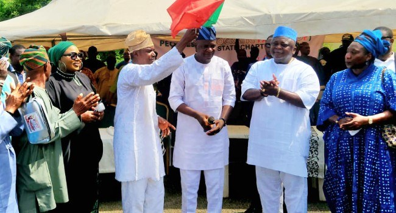

Adebutu Allays Supporters’ Fear Over Omission From INEC List For Ogun Gov Election

Peoples Democratic Party governorship candidate Ladi Adebutu has described his omission from the Independent National Electoral Commission’s list of candidates for the 2027 Ogun election as a temporary setback. Speaking in Abeokuta, he urged supporters and political associates not to lose confidence or be distracted as the party prepares for the election.
Adebutu was addressing an event at the PDP secretariat where defectors from the ruling All Progressives Congress and other parties were received. He said he had been a PDP member for 20 years and had stood as the party’s candidate in five consecutive election cycles. He also cited his involvement in organising and financing party registration in the state, saying he had registered as a member.
He questioned the basis for leaving his name off the list and said he had not left the PDP. Adebutu argued that participation in the party’s primaries was evidence of his membership, and said all Nigerians were entitled to take part in the democratic process. He accused political opponents of trying to slow his campaign and unsettle voters, but did not provide details of the process behind INEC’s omission.
Adebutu said the issue had slowed the party’s activities but would not stop them. He reported that his team had visited 12 of Ogun’s 20 local government areas and 140 of its 236 wards, with further visits planned. He said the campaign would continue and expressed confidence that he and the PDP would win.
Source: Channels TV